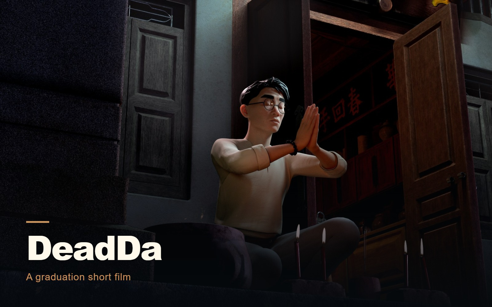

Animation
DeadDa
Graduation short film / collaborative production.

THE PROJECT
My graduation short film, created with a large team at The One Academy. A clinic owner receives an unexpected visitor as he prepares to close.
- MY CONTRIBUTION / FOCUS
- Environment modeling · Texture & shading · Look development · Lighting · Rendering
I contributed environment modeling, texture and shading, look development, lighting, and rendering. Oscar Anwar is credited in each of these departments in the film.
PROCESS & DESIGN
From environment assets to the final frame.
The clinic development and lighting images belong to the same graduation film. The blockout establishes the architecture, the look-development views show the surfaces and scene details, and the lighting studies explore the mood of the finished shots. My credited contribution spans environment modeling, texture and shading, look development, lighting, and rendering.
Environment modeling
I worked within the environment modeling team, alongside Choong Keng Seng, Terrell Devan Inigo, and Sufiani.
Surfaces and look development
I contributed to texture, shading, and look development alongside the wider team. The isolated clinic views make its materials and architectural details easier to inspect.
Lighting and rendering
I also contributed to lighting and rendering. The final film combines those departments with animation, effects, and compositing by the wider team.
01 / DeadDa
Clinic / structure and surfaces
Surviving graduation-project development images. The exterior look-development and set-dressing images carry the source credit IshaSiva; they are presented as team context alongside my credited environment and surface roles.
02 / DeadDa
Lighting / the mood of the scene
Original lighting images from my portfolio archive. The seated views show the treatment of the doorway and candles; the warm close-up shifts the mood and framing. Characters and scene assets are team work.
03 / DeadDa
Inside the finished film
Selected moments from the completed team film. These images provide production context; they do not identify individual assets or shots as solely my work.
More from the team archive
These images show the wider team production. Individual source credits are retained.
DeadDa / FILM & MOTION
Watch DeadDa / full film
5 minutes 33 seconds. Official release by The One Academy, with full team credits.
Watch on YouTube ↗